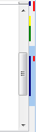

Микро-карта
Микро-карта - это вертикальная цветная полоса у правого края
редактора. Ее отображение включается опцией "Показывать микро-карту
документа" в диалоге "Опции".
Ее функциональность похожа на вертикальный скролл-бар с дополнительной
раскраской. При клике происходит скролл. Пока курсор находится над
микро-картой, в статус-строке отображается соответствующий номер строки.

Пояснения к раскраске:
- Полноширинная полоска (голубой) - текущая видимая область текста
- Цветные пометки у левого края - состояния строк:
- новая строка (зеленый)
- измененная строка (желтый)
- сохраненная строка (синий)
- Пометки у правого края:
- маркеры найденных фрагментов (зеленый)
- ошибки правописания (красный)
Примечания:
- Маркеры найденных фрагментов появляются после команды "Найти
все/пометить" (в диалоге Поиск), или при включённом режиме "Подсвечивать все вхождения выделенного слова".
- Ошибки правописания появляются после применения команды "Вид -- Проверить
правописание" или включеннном режиме "Вид -- Автоподсветка ошибок".